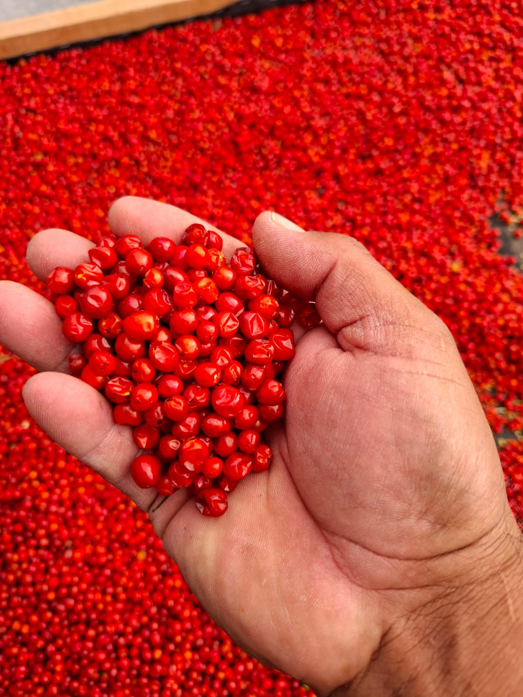
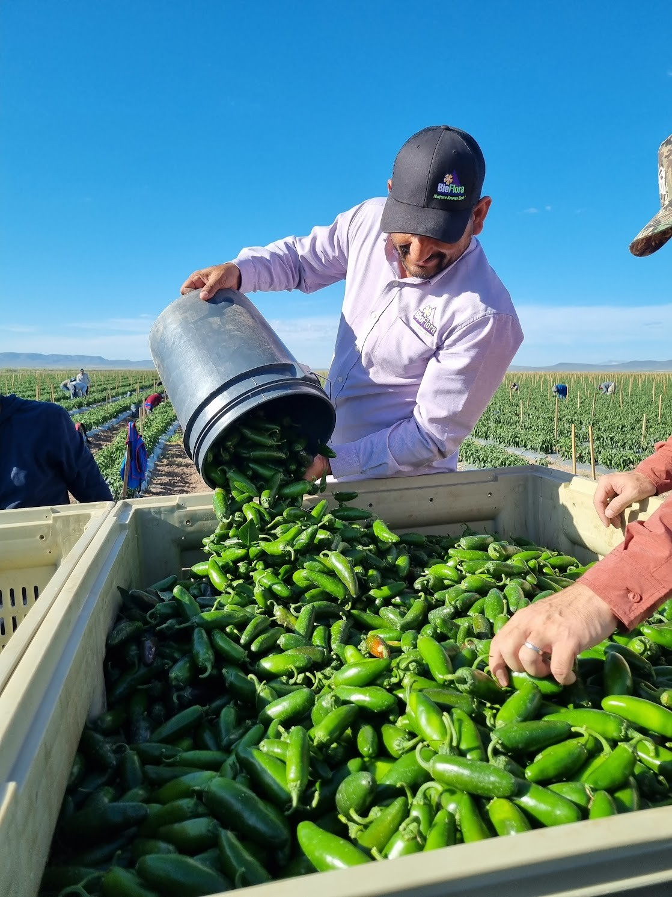
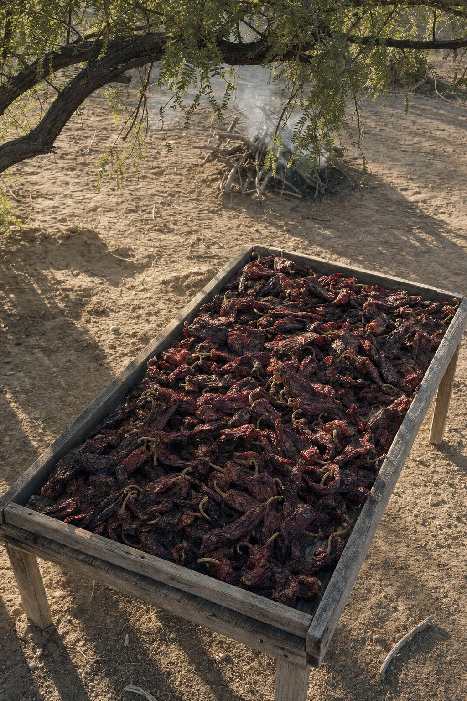
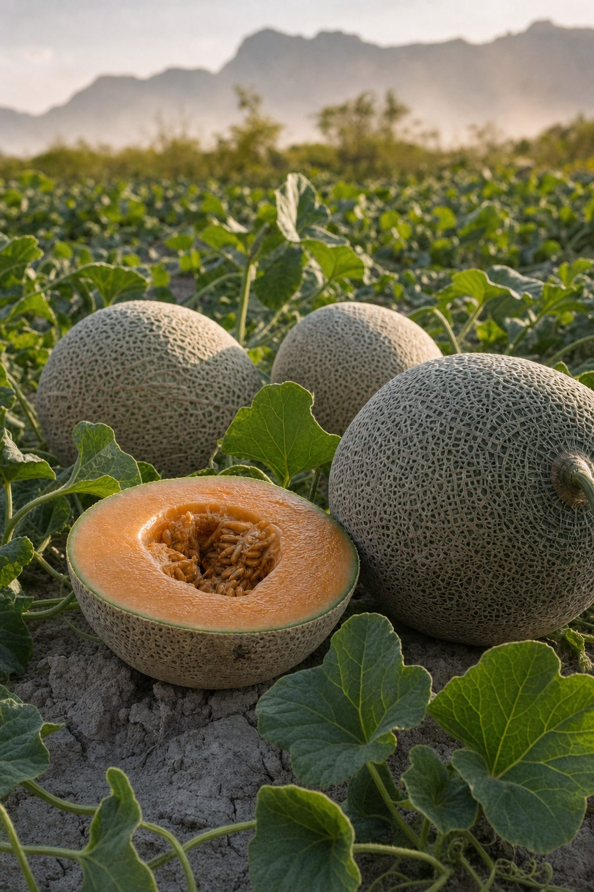
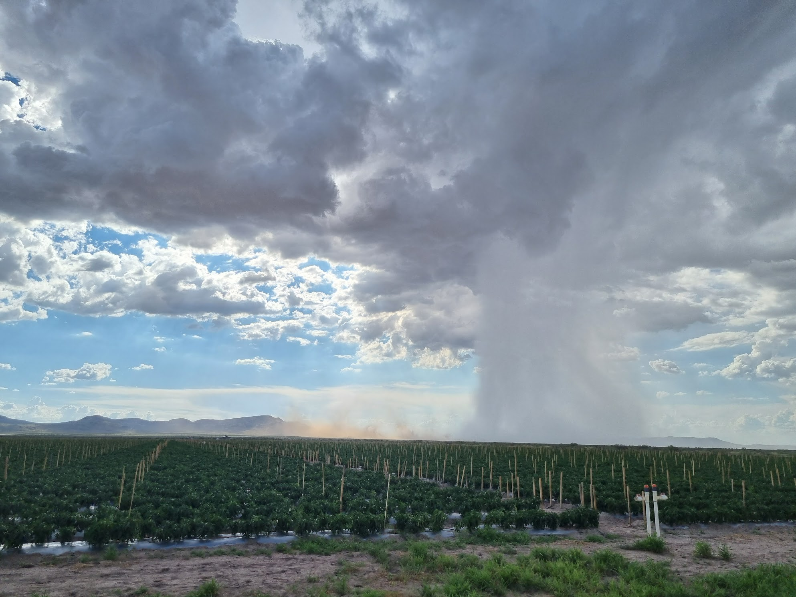

Chile del desierto, documentado.
Chiltepín seco, jalapeño, chipotle ahumado con mezquite y melón Gran Torino — cultivados, cosechados y empacados por AFER Greens en el Valle de Saucillo, Chihuahua. Mayoreo y exportación a México y Estados Unidos, con los tres eslabones certificados Primus GFS.
● Primus GFS Nº 373629 Nº 373630 Nº 373631 SCS Global Services

Cuatro cultivos, un solo origen
Chile chiltepín seco, jalapeño fresco, chipotle ahumado con leña de mezquite y melón Gran Torino — cada uno con su ficha técnica, presentaciones y proceso, documentados para su equipo de compras.
100 g · 1 kg · 10 kg 02 Jalapeño fresco Pared gruesa · pungencia media
Mercado fresco · encurtidos · industria

03 Chipotle ahumado Leña de mezquite · secado lentoArpilla 30 kg · salsas · gourmet

04 Melón Gran Torino Alto °Brix · pulpa firmeGranel · mercado fresco · exportación


Para su equipo de compras
- Pedido mínimo (MOQ)
- Por producto y presentación Indique su volumen en la cotización y confirmamos mínimos. Por confirmar
- Incoterms
- EXW · FOB · DAP Condiciones de entrega según destino. Por confirmar
- Respuesta a cotizaciones
- < 24 h hábiles Con precio, logística y condiciones comerciales. Por confirmar
- Documentación
- Primus GFS verificable Certificados Nº 373629 · 373630 · 373631 y documentación de exportación disponible.
Calendario de disponibilidad
Un rancho del desierto chihuahuense
Valle de Gigantes es un rancho productor en el Valle de Saucillo, Chihuahua, dedicado al cultivo de chile chiltepín, jalapeño y melón en ambiente semidesértico, con suelos minerales y los ciclos agrícolas del norte. Año de fundación por confirmar
Controlamos el proceso completo — semilla, cultivo, cosecha y empaque — y los tres eslabones están certificados Primus GFS, auditados anualmente por SCS Global Services. El chipotle se ahúma con leña de mezquite en proceso artesanal, sin humo líquido.
Especialización
Cuatro cultivos de alto valor comercial. Nada más.
Ahumado con mezquite
Proceso artesanal lento con leña del desierto chihuahuense.
Inocuidad auditada
Primus GFS en granja, cuadrilla y empaque, verificable en línea.
Campo a mesa
Control total: semilla, cultivo, cosecha y empaque propios.
Inocuidad verificable
Operación certificada Primus GFS en los tres eslabones críticos de la cadena de suministro, auditada anualmente por SCS Global Services. Cada certificado es un documento público: verifíquelo usted mismo en el sistema Azzule.
Auditado por SCS Global Services · Estándar Primus GFS · Verificable en el sistema Azzule
Lo que preguntan los compradores
P.01
¿Qué es el chile chiltepín?
El chiltepín (Capsicum annuum var. glabriusculum) es un chile pequeño y esférico, de 5 a 8 mm de diámetro, considerado el ancestro silvestre de los chiles cultivados. Es originario del norte de México y se consume principalmente seco. Su picor es intenso — entre 50,000 y 100,000 unidades Scoville (SHU) — pero de final corto y limpio. Lo cultivamos y cosechamos manualmente en el Valle de Saucillo, Chihuahua. Ver ficha técnica del chiltepín.
P.02
¿Venden al menudeo o solo al mayoreo?
Nuestro canal principal es la venta al mayoreo y medio mayoreo para procesadoras, empacadoras, mercados de abastos, marcas gourmet y exportación. El chiltepín seco se ofrece en presentaciones de 100 g, 1 kg y 10 kg; el chipotle ahumado en arpilla de 30 kg; el jalapeño fresco en caja, y el melón a granel.
P.03
¿Cuál es el pedido mínimo (MOQ)?
El pedido mínimo depende del producto y la presentación. MOQ por confirmar Indique su volumen en la cotización y le respondemos con mínimos, logística y condiciones comerciales.
P.04
¿Exportan a Estados Unidos?
Sí. Surtimos a compradores en México y exportamos a Estados Unidos. La certificación Primus GFS en los tres eslabones — granja, cuadrilla y empaque — facilita la calificación de proveedores para importadores. Incoterms por confirmar
P.05
¿En qué temporada están disponibles sus productos?
El chiltepín seco y el chipotle ahumado se manejan con inventario a lo largo del año, sujeto a cosecha. El jalapeño fresco y el melón Gran Torino son productos de temporada con ventanas de cosecha del ciclo agrícola del norte de México. Meses por confirmar
P.06
¿Cómo verifico su certificación Primus GFS?
Nuestros tres certificados son públicos y verificables: Granja Nº 373629, Cuadrilla Nº 373630 y Empaque Nº 373631, emitidos y auditados por SCS Global Services. Los PDF oficiales están enlazados en la sección de certificación y en el sistema Azzule.
P.07
¿Cómo se elabora su chipotle ahumado?
Partimos de jalapeño rojo madurado en planta. Se ahúma lentamente con leña de mezquite del desierto chihuahuense, en un proceso artesanal que deshidrata el chile y le da su perfil ahumado y dulce característico. Sin humo líquido ni acelerantes. Ver ficha técnica del chipotle.
P.08
¿Cómo solicito una cotización?
Use el formulario de cotización, escríbanos por WhatsApp (se abre en nueva pestaña) al +52 614 169 0797, o envíe un correo a jacobo@afergreens.com indicando producto, volumen y destino.
Hablemos de volumen
Surtimos mercados de abastos, procesadoras y empacadoras en México, y exportamos a Estados Unidos. Cotice su volumen directo con nosotros.
Rancho Valle de Gigantes, La Cruz,
Municipio de Saucillo, Chihuahua, CP 33676
Primus GFS Nº 373629 · 373630 · 373631
Solicitar cotización
F-01Respondemos en menos de 24 horas hábiles Por confirmar